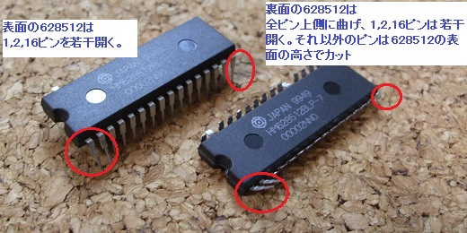
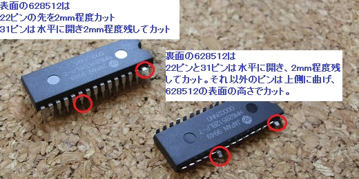
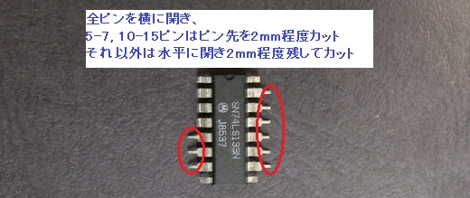

６．ICの足の加工
628512(2個), HC133, GAL16V8Dのピンを次の写真を参考にして加工します。
写真では裏面の628512の16ピンがカットされていますが、1,2ピンと同じくカットせず、
上向きに曲げて若干外側に開くようにします。


HC133・・・写真ではLS133ですが大きな問題は無いでしょう。

CAL16V8Dについては写真を取り忘れましたが、全ピン、HC133の1-4ピン等と同じく横に
開き、2〜3mm程度残してカットします。
 次へ
次へ